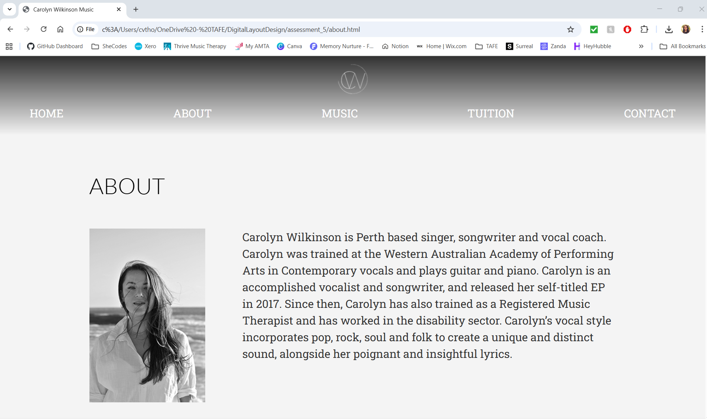
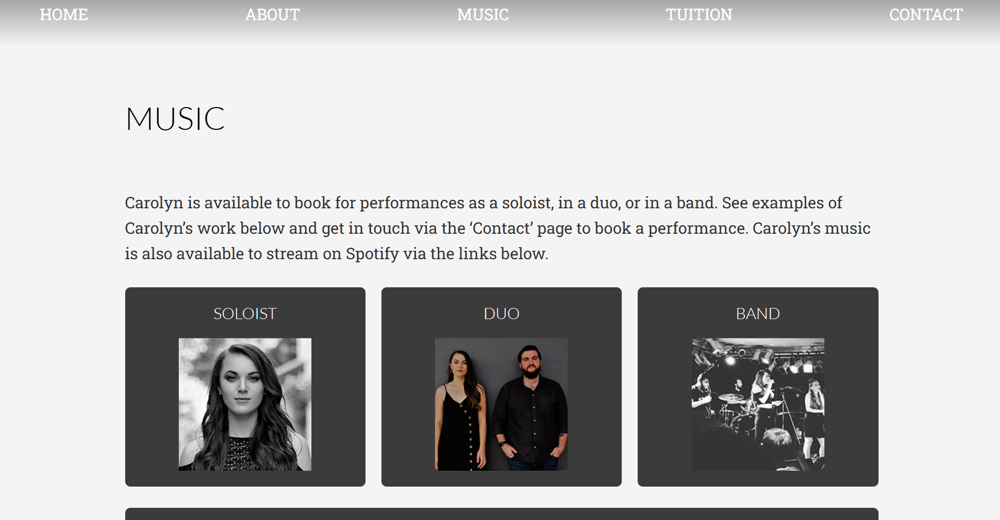
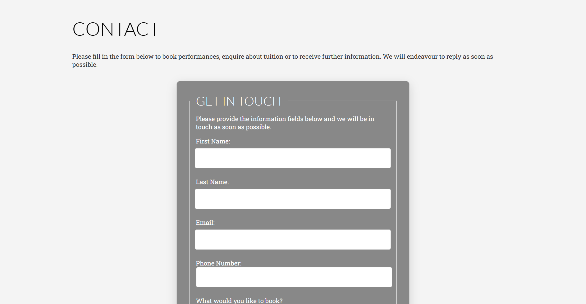
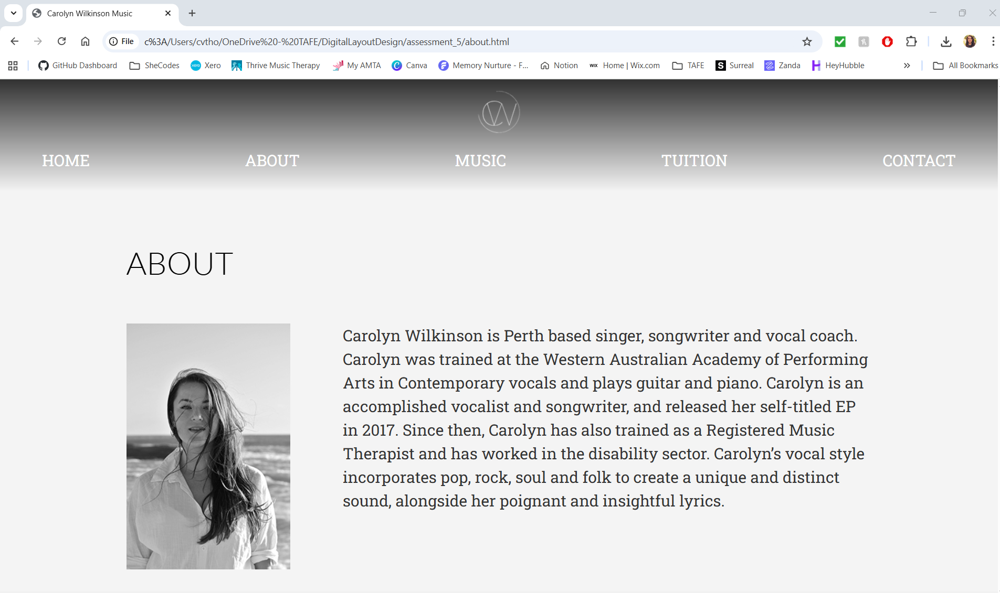
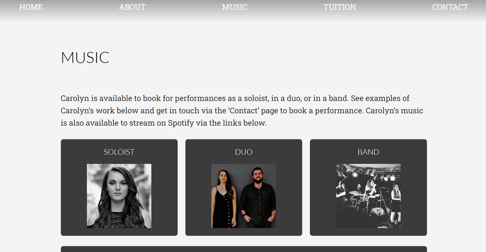
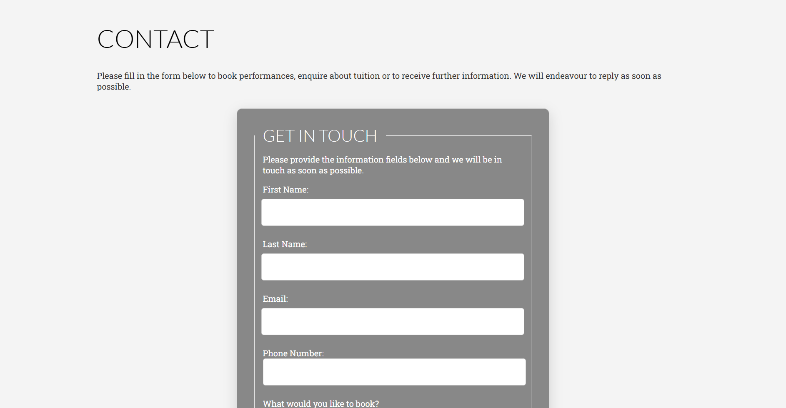

TAFE Personal Project Website
In this project for TAFE, I was required to choose a topic of my preference and create a website for it using only HTML, CSS and JavaScript - although I was only allowed to use JavaScript to validate the contact form. I chose to create a website for my own personal music business, which would advertise my performances, teaching and original music, as well as linking to my social media and examples of my work. I chose to use monochrome theme and keep the homepage very simple, centering around an image, while the content pages held more information but continued the simple, monochromatic effect.
 




